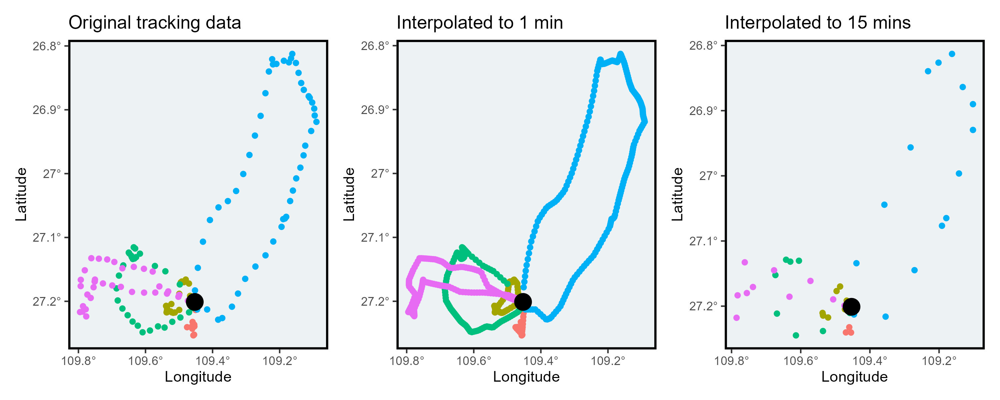

#devtools::install_github("MiriamLL/sula")
library(sula)Interpolate a path
R
ggplot2
English
Y2024
biologging
Doing a linear interpolation of tracks of animals.
Intro
This post is about how to linear interpolate points from a trip
Data
Download my package sula to have access to test data and the function interpolate_trips.
Inside the package, there is data from a tracked individual from Rapa Nui, Chile
ID01_track<-sula::GPS01_tripsThe data contains Latitude, Longitude, Date, Time, ID and trip_number
head(ID01_track)Plot the data using ggplot to see whats inside.
library(ggplot2)Add the central location for reference.
ID01_nest<-data.frame(Longitude=-109.4531,Latitude=-27.20097)In the figure, the original points recorded are presented. Each color represents a different individual, the black dot is the colony.
Original_track<-ggplot(ID01_track, aes(x=Longitude, y=Latitude, color=trip_number)) +
geom_point()+
theme_bw()+
ggtitle('Original tracking data')+
theme_bw()+
theme(legend.position='none')+
scale_x_continuous(labels = function(x) paste0(-x, '\u00B0')) +
scale_y_continuous(labels = function(x) paste0(-x, '\u00B0')) +
xlab('Longitude')+ylab('Latitude')+
theme(
panel.background = element_rect(fill = '#edf2f4'),
panel.grid.major = element_blank(),
panel.grid.minor = element_blank(),legend.position='none',
panel.border = element_rect(colour = "black", fill=NA, size=1.5)
)+
geom_point(data=ID01_nest,aes(x = Longitude,y= Latitude),
color="black", fill="black",shape=16,size=5,stroke=1.5)
Original_trackInterpolations
For the function, provide the following information:
1. trip_number, this would separate the trips and interpolate them using a loop. This is important to prevent that locations inside the nest are interpolated.
2. column_lat, and column_lon, need to be provided with the name of your columns. Here, Latitude and Longitude were the names of my columns. I am providing the Latitude and Longitude in degrees.
3. column_date, column_time and datetime_format should also be fitting your provided data.
4. interval, please give the interval in seconds. This interval would depend on the type of data you are providing. Because this is a linear interpolation, be careful to not have large gaps. If you do, I would suggest to remove trips with large gaps before doing the interpolation.
Interpolate to 1 minute
ID01_interpolated1m<-interpolate_trips(GPS_data=ID01_track,
interval='60 sec',
column_date='DateGMT',
column_time='TimeGMT',
column_trip='trip_number',
column_lat='Latitude',
column_lon='Longitude',
datetime_format<-"%d/%m/%Y %H:%M:%S")You can see that after the function you have more data points.
This is because the original data was collected every 5 minutes, and the interpolation added locations every one minute.
nrow(ID01_track)
nrow(ID01_interpolated1m)Plot the interpolated data set to see the difference.
Interpolated_1m<-ggplot(ID01_interpolated1m, aes(x=Longitude, y=Latitude, color=trip_number)) +
geom_point()+
ggtitle('Interpolated to 1 min')+
theme_bw()+
theme(legend.position='none')+
scale_x_continuous(labels = function(x) paste0(-x, '\u00B0')) +
scale_y_continuous(labels = function(x) paste0(-x, '\u00B0')) +
xlab('Longitude')+ylab('Latitude')+
theme(
panel.background = element_rect(fill = '#edf2f4'),
panel.grid.major = element_blank(),
panel.grid.minor = element_blank(),legend.position='none',
panel.border = element_rect(colour = "black", fill=NA, size=1.5)
)+
geom_point(data=ID01_nest,aes(x = Longitude,y= Latitude),
color="black", fill="black",shape=16,size=5,stroke=1.5)
Interpolated_1mInterpolate to 15 minutes
To interpolate to 15 minutes, change the interval to 900 sec.
ID01_interpolated15m<-interpolate_trips(GPS_data=ID01_track,
column_trip='trip_number',
column_lat='Latitude',
column_lon='Longitude',
column_date='DateGMT',
column_time='TimeGMT',
datetime_format<-"%d/%m/%Y %H:%M:%S",
interval='900 sec')You can see that after the function you have less data points.
This is because the original data was collected every 5 minutes, and the interpolation added locations every 15 minutes.
nrow(ID01_track)
nrow(ID01_interpolated15m)Plot to see the difference.
Interpolated_15m<-ggplot(ID01_interpolated15m, aes(x=Longitude, y=Latitude, color=trip_number)) +
geom_point()+
theme_bw()+
ggtitle('Interpolated to 15 mins')+
theme_bw()+
theme(legend.position='none')+
scale_x_continuous(labels = function(x) paste0(-x, '\u00B0')) +
scale_y_continuous(labels = function(x) paste0(-x, '\u00B0')) +
xlab('Longitude')+ylab('Latitude')+
theme(
panel.background = element_rect(fill = '#edf2f4'),
panel.grid.major = element_blank(),
panel.grid.minor = element_blank(),legend.position='none',
panel.border = element_rect(colour = "black", fill=NA, size=1.5)
)+
geom_point(data=ID01_nest,aes(x = Longitude,y= Latitude),
color="black", fill="black",shape=16,size=5,stroke=1.5)
Interpolated_15mCompare
Using the package patchwork we can see the difference side by side.
library(patchwork)Original_track+Interpolated_1m+Interpolated_15mSelect the interpolation interval that fits better your data.

Further reading
To follow instructions from raw data to interpolation check this blogpost.
To access the function click here. You could copy and adjust the function to your data.
If you want to give it a try, there are other packages to interpolate data:
- crawl
- adehabitatLT
- trip
- pastecs